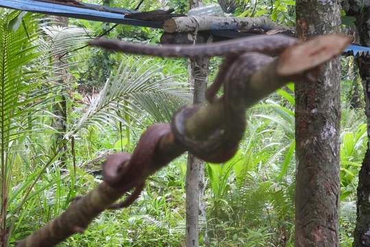

Snakes of Vanuatu
5 living snake species are recorded in Vanuatu in SnakeList: 2 venomous and 3 non-venomous, from 2 families.
- 5living species
- 2venomous
- 3non-venomous
- 2families
Danger to people
- 2harmful to people
- 2dangerously venomous
- 0mildly venomous
- 0giant constrictors
- 3harmless
Harmful = dangerously venomous + giant constrictors. Harmless = not venomous and not a giant constrictor. Mildly venomous snakes have no serious bites to people documented. Any snake can bite.
These totals count the unique living snake species SnakeList records in Vanuatu. A species counts if it is recorded anywhere in the country, so not every snake lives in every part of it.
In SnakeList’s checklist filters
How many of the 5 living species here each filter in the SnakeList app picks out.
Snake family2 types, 2 families
Type
- 3Boa
- 2Other
Family
- 3Boidae
- 2Elapidae
Habitats6 habitat groups
- 3Rainforests
- 4Forests & woodlands
- 2Coasts & sea
- 1Borneo
- 2South & Southeast Asia
- 4New Guinea & Australia
Habitats are estimated from where each snake is recorded and what kind of snake it is, as in the app; a snake can count in several.
Characteristics2 venomous, 3 constrictors
- 2venomous
- 3non-venomous
- 3constrictors
- 2non-constrictors
- 0constriction not documented
- 0snake eaters
Constrictor and Non-constrictor count only snakes whose family or genus is documented as constricting or not; the rest are not documented.
Other filters0 popular, 0 rare
- 0popular
- 5uncommon
- 5exotic
- 0invasive
- 1common
- 0rare
- 0no photos
- 0extinct
- 2harmful
- 3low risk
Species
Showing 5 species
 Bibron's Pacific BoaCandoia bibroni
Bibron's Pacific BoaCandoia bibroni
Pacific Boa (carinata)Candoia carinata Solomon Island Ground BoaCandoia paulsoni
Solomon Island Ground BoaCandoia paulsoni Yellow-lipped Sea KraitLaticauda colubrina
Yellow-lipped Sea KraitLaticauda colubrina Yellow-lipped Sea SnakeLaticauda frontalis
Yellow-lipped Sea SnakeLaticauda frontalis
No snakes in Vanuatu match.
How precisely they are recorded
Of the 5 living species recorded in Vanuatu, 4 are recorded by province in SnakeList’s data; 1 is recorded only for Vanuatu as a whole, so the province pages list it as possible rather than recorded. SnakeList records each species by province, not by exact spot, so a species listed for a province may live in only part of it.
Provinces
The provinces where SnakeList records snakes, with how many living species are recorded in each. Each page has its species, venomous snakes, families, the species found only there, its cities and neighbours.
Cities
Its biggest cities, biggest first. SnakeList records snakes by province, not by city, so each city page shows the species recorded in its province and, separately, those only possible there - not species confirmed in the city.
- Port-Vila Shefa
No place matches that.